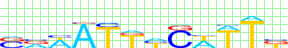
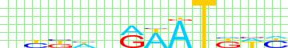
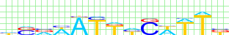

motif alignment
| Bigfoot |  |
|---|---|
| Bergman | |
| Pollard |  |
| SeSiMCMC |  |
motif similarity
| Bigfoot | Pollard | Bergman | SeSiMCMC | |
|---|---|---|---|---|
| Bigfoot | 1.0 | 0.0589 | 0.0509 | 0.7745 |
| Pollard | 0.0589 | 1.0 | 0.1234 | 0.0639 |
| Bergman | 0.0509 | 0.1234 | 1.0 | 0.0503 |
| SeSiMCMC | 0.7745 | 0.0639 | 0.0503 | 1.0 |
Kulakovskiy I.V., Favorov A.F., Makeev V.J. (2009) Motif discovery and motif finding from genome-mapped DNase footprint data. Bioinformatics 25(18): 2318-2325.
|
motif alignment
motif similarity
|